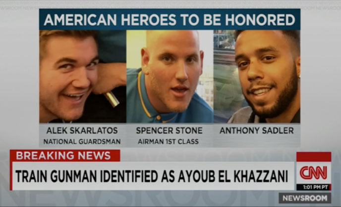

What makes some people stand in the face of danger? What’s the difference between an ordinary person and a hero? Find out from the real-life heroes who took it upon themselves to stop a terrorist on a train in Paris and from Clint Eastwood who directed 15:17 to Paris, the movie about them.
CNN archive content presented by Warner Bros.
Thanks to the actions of three heroic individuals not a single life was lost. See how the event unfolded for the world through CNN’s coverage of the evening of August 21, 2015.
